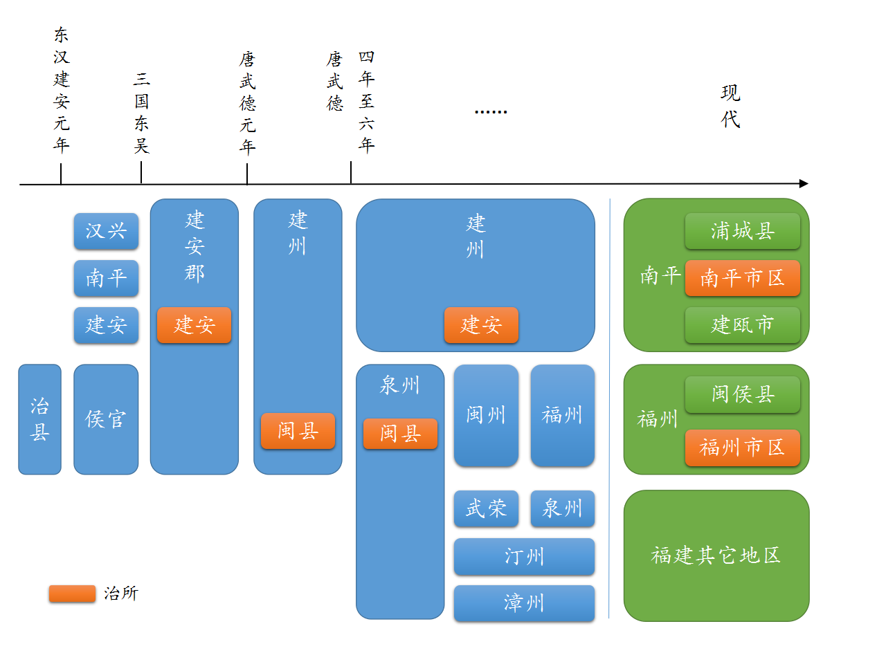
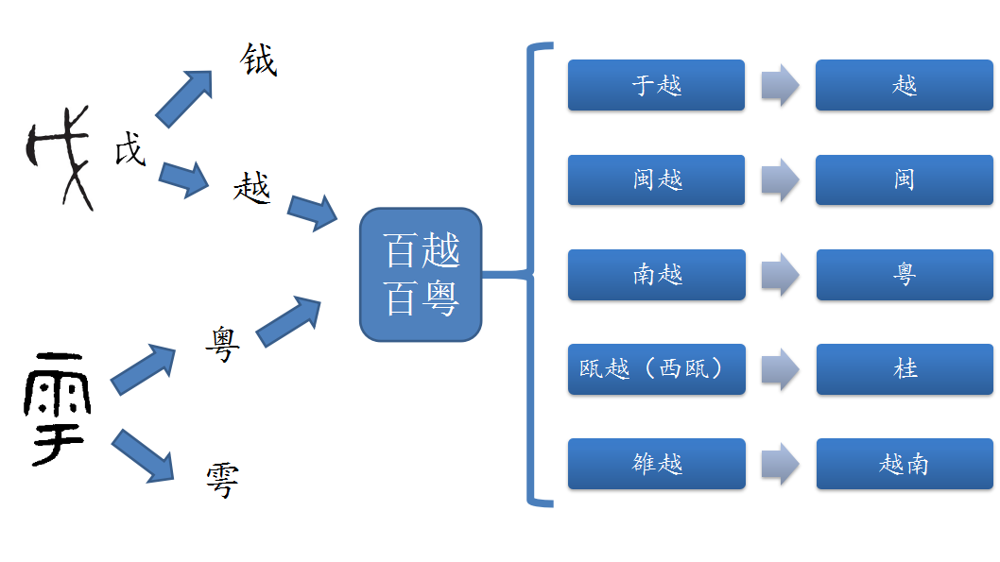

作为广东人，我专门了解过『广东』 和『粤』这两个名字的来源。也大概知道其它一些省份名字的起源。
印象里是以自然地理命名为主。在地名里出现东南西北还有阴阳（山南水北谓之阳）的，一般都是用来指示在某个地理标志的旁边，而这样的名字很常见。
真的是这样吗？我也不确定。300 多个地级行政区就算了，34 个省级行政区不多，那就查一下。
溯源时我会尽量追溯最初的源头。例如两广以及广州的『广』，很容易查到来源于广信，但查询不会就此终止，如果可能还是要查出广信的『广』哪里来。又例如甘肃的『甘』来自甘州，而甘州的『甘』，则据传来自城内的甘泉。这种追溯并非总是可行，实际上大多数古地名都无法进一步查证来源，如果追溯到山川河岳的命名，更没有什么道理可讲。
简称也会列出来源。由于简称往往不止一个，不再统计数量。感兴趣的读者可以自己统计分类。
本文并非原创研究，也不是严谨学术文章，仅仅是出于个人兴趣的整理。
内容来自对网络公开信息的整理，主要参考维基百科（https://zh.wikipedia.org/），个别兼有参考百度百科（https://baike.baidu.com/），交叉比对的词条数量太多，不一一列举。
对于多种说法的情况，会尽量将不同说法列出，只略去个别明显不合理的说法。同样，分类标准也并非毫无争议，存在一些模棱两可的情况，这时纯粹依据个人判断。
如有错漏，欢迎留言指正。
目录
[TOC]
自然地理
这类命名，名字里的关键信息来源于自然的地理标志，如山脉、江河、湖泊等。两广这样『广』字来源于历史事件的不算。这类命名往往作为地区泛指先出现，在成为习惯叫法很多年以后再确认为正式的行政区。
这一类的数量确实最多，达到 18 个，刚好过半，但是仍然比我预期中的要少。我本以为会占压倒性的大多数。
自然地理的范围太广，还能进一步分类。其中山脉 2 个，江河 8 个，湖泊 3 个，海洋港口 3 个，能明显看出地理特征但不好分类的 2 个。二级分类里，以江河命名的最多，甚至有 3 个行政区，名字直接就是江河名本身（包括古称或简称）。这也很正常，毕竟人类文明就是在大河流域孕育的。
山脉
山西
太行山以西。原为地区泛指，春秋时属晋国。秦及以后各代，山西地区都属于政权的腹地，并有多个朝代在山西地区建立陪都。
唐宋时境内大部分属于河东道（路），取黄河以东。时至今日，黄河仍然是山西和陕西的分界线。直到元朝设河东山西道，直属中书省，『山西』开始出现在行政区名上。明朝设山西等处承宣布政使司，正式成为行省，山西彻底取代河东成为行政区名。
简称晋，春秋时境内为晋国之地。
山东
太行山以东。『山东』的说法最早出现于战国，金代以前是一个地区泛指，先秦指崤山和华山以东，唐宋指太行山以东。
境内在唐时分属河北道和河南道，宋时主要属京东东路。南宋时山东全境被金占领，金设山东东路、山东西路两路，『山东』开始作为行政区名。元时为山东东西道，属中书省。明朝设山东等处承宣布政使司，正式成为行省。
简称鲁，有时也称齐鲁或齐，因春秋战国时境内主要为齐国和鲁国。
江河
河南
古黄河以南。秦汉以前河专称黄河，河流称川或水，后来才逐渐变成通称。
楚汉之争时项羽封申阳于原韩国三川郡（黄河、洛水、伊水为三川），为河南国，后亡于汉，改河南郡，为西汉京畿地区直属七郡之一，大约相当于今洛阳及周边地区，是今河南境内最早以『河南』为地名。
唐改河南府，属都畿道（即东都）；同时期有河南道，约为今山东全境、河南全境（除洛阳）加上安徽和江苏北部。宋初将两京归入河南道，但很快又重新划分十五路，其中并没有河南路，河南府属京西北路。元设河南江北等处行中书省，简称河南省或江北省，辖下的河南江北道接近今河南大部加湖北北部。明设河南等处承宣布政使司，基本与今河南一致。
河南简称豫，境内为禹贡九州的豫州之地。《周礼》解释说『禀中和之气，性理安舒，故云豫也。』豫为安乐、安逸之意。
河北
古黄河以北。
秦置河东郡河北县，为『河北』最早见于地名，但此时的河北只是一个县，大约在今山西南部。
唐设河北道，开始包括今河北全境及邻近省的部分地区。宋改河北路，金分河北为东西两路。元时因紧邻大都，分属中书省的京畿山后道和燕南河北道。明清属（北）直隶。民国被分为察哈尔、热河、河北三省。新中国成立后恢复原河北行政区。
河北简称冀，境内为禹贡九州的冀州之地。又因春秋战国时境内有燕赵两国，又称燕赵之地。
江西
长江以南的西部。秦汉以前江专称长江，汉称『大江』，六朝开始出现『长江』的记录。
唐初设江南道，取长江以南之意。玄宗时分江南道为江南东道、江南西道、黔中道。江南西道即江西前身，包括今江西及湖南全境、湖北及安徽南部部分地区。肃宗时设洪吉都团练守捉观察处置使，代宗时改江南西道观察使（通称江西）。后升为节度使，懿宗时改江西节度使，管辖今江西全境，为『江西』一名的开始。
宋初复设江南路，真宗时又分为东西两路。元设江西等处行中书省，包括今江西大部和广东西部以外全境，正式使用『江西』作为行政区名。明设江西等处承宣布政使司，基本与今江西一致。
简称赣，来源于境内最大的河流赣江（又写作灨）。又因为从北往南看在长江右边，被称为江右，与之相对江东又称为江左。
浙江
取自浙江，即钱塘江古称。一般认为，钱塘江古称『浙江』，见于《山海经》、《越绝书》、《史记》、《水经注》等古籍，又称『折江』、『之江』。
浙江境内在春秋战国时属越国，后亡于楚。秦灭楚后设会稽郡。
唐初设江南道，玄宗时分出江南东道，肃宗时又分江南东道为浙江东道、浙江西道以及福建道，是『浙江』二字第一次作为行政区名，浙江二道合称『两浙』，辖境大致为今天苏南、皖南、上海及浙江全境，与今天吴语区相仿。
宋设两浙路。元代在两浙及福建设立江浙等处行中书省，治杭州路。明设浙江等处承宣布政使司，开始和福建分开，辖区与今基本一致。
简称浙。因为境内为古百越中的于越的核心区域，也是春秋时越国所在，有时也称为越。
上海
取自上海浦（即黄浦江），吴淞江（今苏州河）北支流；另有下海浦，在今虹口区，已被填平。
上海地区早在晋朝已经有渔民聚集发展出商贸集镇，到唐天宝年间设华亭县，属苏州。南宋时华亭县属嘉兴府，于上海浦西岸设市镇，集市名上海市，镇名上海镇，为『上海』首次见于地名。
元朝时华亭县升格为松江府，辖华亭县。后以『华亭地大人众，难理』析华亭县东北置上海县，仍属松江府，为上海建制之始。至明嘉靖年间为抵御倭寇，上海县筑起城墙。此时松江府已较为富庶。
1843 年《南京条约》上海作为通商五口开埠。1845年中英《上海租地章程》开始租界历史。此后法国与美国相继在上海设立租界。租界逐渐形成不受中国管辖，拥有独立司法、行政权力的地区。之后历经数次扩张，范围基本为今上海的核心区域的大部分地区。凭借独特的政治制度和地理位置，上海开埠后逐渐发展为远东最繁荣的经济和商贸中心。新中国成立后，上海市从江苏省划出，设为直辖市。
简称沪，源于古时当地人创造的一种名为“扈”的捕鱼工具，东晋时松江入海口称之为沪渎（今上海市青浦区东北旧青浦镇西）。有时也称申，相传上海西部战国时曾为楚国公子春申君的封地。
辽宁
取辽河永远安宁之意。
东北地区在古代大部分时间属于渔猎民族活动范围，先秦时期有肃慎、秽貊、东胡等民族，与汉族并称东北四大族系。汉至唐期间，境内先后有高句丽、挹娄、室韦、靺鞨等民族活动。
战国时燕国在辽宁地区设置辽东、辽西两郡，为『辽』最早作为行政区出现。中原对两郡的统治一直延续到唐末。西汉征服卫满朝鲜之后，一度设置乐浪、玄菟、真番、临屯四郡，合称汉四郡。但到西晋时因不堪长期与高句丽和百济作战，侨置辽西而丢失。
东北境内先后建立过扶余国、高句丽、渤海国等国，渤海国后成为唐的属国。唐以后先后是辽朝与金朝的统治范围。
元朝开始将东北纳入中央王朝管治。明朝在东北境内设置都司、卫所等军事机构，对当地民族实行招抚、羁縻政策。清初将这里作为自己的起源禁地，禁止汉人入内，并作为流放犯人之地，设东北三将军镇守。
南部为镇守盛京等处将军，又称奉天将军。光绪三十三年（1907 年）裁三将军，改东北三省。南京国民政府时期考虑到『奉天』取自『奉天承运』，君主思想浓厚，改今名。
简称辽。辽河旧称巨流河，西汉前称句骊河。
因为东北地区历史上诞生过辽朝，很容易让人觉得辽宁的辽来自辽国。但实际上在战国时燕国就有辽东、辽西两郡，很可能就是以辽河作为分界线，比辽国的诞生要早得多。辽的国号从契丹改为大辽，也有可能是受辽河影响。
吉林
满语吉林乌拉的简称，意为沿着松花江，原指今吉林市。
（部分内容参考『辽宁』一节）
清顺治时设宁古塔昂邦章京，康熙时改宁古塔将军，后移驻吉林，改称镇守吉林等处地方将军，吉林从城池名变为行政区名，包括今吉林全境、黑龙江东部、辽宁北部，以及俄罗斯滨海边疆区和哈巴罗夫斯克边疆区。沿海地区在 1860 年的 《北京条约》被全部割让。1907 年改省，1954 年省政府从吉林市迁到长春市。
简称吉。
黑龙江
来自境内最大河流黑龙江，满语萨哈连乌拉，即黑水。
（部分内容参考『辽宁』一节）
康熙时设镇守黑龙江等处地方将军，辖今黑龙江西部及内蒙古自治区东北部，黑龙江开始作为行政区。1907 年改省。
简称黑。
湖泊
湖南
取自洞庭湖以南。
湖南境内在唐玄宗时分属山南东道、江南西道和黔中道。
唐代宗从江南西道分置湖南都团练守捉观察处置使，又称湖南道，辖衡（今衡阳）潭（今长沙）在内五州，后增至七州，为『湖南』之名首次出现。
宋时分属荆湖南路和荆湖北路。元设湖广等处行中书省，包括今湖南、湖北、广西、海南及广东西部，先设宣慰司于衡州，后迁潭州；今湖南境内主要属于岭北湖南道。
明属湖广等处承宣布政使司，包括今湖南湖北（广东及广西布政使司已从湖广分出）。清初沿明制，至康熙时分湖广左、右布政使司，后改湖广右为湖南布政使司，正式成为独立行省。
简称湘，来自贯穿全境的河流湘江。
湖北
取自洞庭湖以北。
唐以前湖北境内大部分时间属于荆州，唐玄宗时将江南道分置为三道，今湖北境内分属山南东道、淮南道、江南西道和黔中道。
宋改道为路后，湖北分属荆湖北路和京西南路。元设湖广等处行中书省，湖北主要属江南湖北道，北部则属河南江北行省河南江北道。
明至清初湖广等处承宣布政使司已不再包括两广地区，但两湖仍同属一省。康熙时分湖广左、右布政使司，后改湖广左为湖北布政使司，正式成为独立行省。
简称鄂，因武汉周边在西周属于鄂国。鄂国原在河南南阳一带，受晋国压力南迁。后境内诸侯国都被楚国吞并，春秋战国时期属于楚国，所以又称为楚。又因湖北全境属禹贡九州的荆州，又称荆、荆州、荆楚。
青海
因青海湖得名。
青海东部自汉朝开始纳入中央王朝控制，至隋朝控制青海全境。
安史之乱时被吐蕃夺取西宁，至元朝重新并入中央管治。元以前属鄯、廓二州，北宋改鄯州为西宁州，为西宁名字之始。
元时大部分属吐蕃等處宣慰司都元帥府。清改西宁府，属甘肃省，西宁以外的大部分地区，设钦差办理青海蒙古番子事务大臣，又称青海办事大臣，驻青海湖东，是『青海』作为行政区的开始。
乾隆时青海办事大臣移驻西宁，改称西宁办事大臣。民国初改西宁办事长官，仍驻甘肃西宁。1929 年设青海省，省会西宁县，西宁不再归属甘肃。
简称青。
海岛港口
海南
即海南岛及周边南海诸岛。取南海（实际上是琼州海峡）以南之意。
海南岛从西汉开始纳入中央管治，属珠崖郡（今海南琼山）、儋耳郡。东汉平交趾（今越南北部），珠崖县归交趾刺史部（今广东、广西、福建漳州及越南北部）。之后海南岛及雷州半岛地区一直归属两广所在行政区。
明以后归属广东，至 1988 年独立建省，取岛名为行政区名。
唐代在岛上建琼州，简称琼和琼州海峡得名于此。
香港
地理上指香港岛、九龙半岛及周边岛屿。香字来历有多种说法，一说由于东莞香料在此转运，一说源于叫香江的溪流。而港则因为此处是天然良港。
香港开埠之前归属广东，历属番禺县（今广州）、宝安县（今深圳）、循州（今惠州）。
1810 年代，英国东印度公司勘探珠江口香港一带地形，英国人于香港岛赤柱登陆后，获原居民陈群引路到香港岛北部，行经香港村（今黄竹坑旧围）时从陈群的蜑家话回答中得知『香港』发音，后成为整座岛屿的总称。英治时期的香港旗有『阿群带路』图纪念此事。而香港村的得名，则有上述两个说法。
香港因两次鸦片战争签署的《南京条约》和《北京条约》被英国强租为殖民地。1997 年回归后设特别行政区。
简称港。雅称香江。
澳门
本名蠔镜澳（后蠔改濠），指盛产蚝且水域如镜的港湾。澳指海边湾区可以停船的地方，即泊口。因澳外有名为『十字门』的水域，所以称澳门。
澳门被葡萄牙强租之前属广东，历属番禺县（今广州）、封乐县（今江门新会西北）、宝安县（今深圳）、东莞县（今东莞）、香山县（今中山与珠海）。
明代时葡萄牙人在屯门海战大败，开始转向澳门寻找地盘，先以贿赂获准在澳门暂居，后经公开将贿赂转为地租。清末葡萄牙停止向清朝交地租并占领关闸，后迫使清政府签订《中葡和好通商条约》，规定中国同意葡国永居管理澳门，再后来扩展边界，并划定澳门的界址，使澳门沦为殖民地。1999 年回归后设特别行政区。
简称澳。
其它
以下两个能看出是以自然地理命名。陕指陕塬，『陕』和『塬』都是对地貌的描述。川为平川广野，指的是四川盆地。
陕西
陕塬以西之意。周朝初，周公召公以陕塬（又名陕陌，今河南三门峡市陕州区内）为界，分陕而治。『自陕而东者，周公主之；自陕而西者，召公主之。』关于陕，《直隶陕州志》有『山势四围曰陕，环陕皆山故曰陕』。塬则是黄土高原上的一种地貌，周围被流水冲刷形成沟壑，边缘陡峭，顶上保持比较平坦的状态。
唐朝陕西地区属京畿道，直属中央。安史之乱后在今陕西、河南之间设陕虢华节度使，后改陕西节度使，兼神策军（禁军的一支），为『陕西』之名的开始。
宋朝设陕塬以西为陕西路，包括今甘肃部分地区而不包括秦岭以南地区，『陕西』开始成为行政区。元设陕西等处行中书省。明将甘肃划入陕西等处承宣布政使司，改奉元路为西安府，为西安之名的开始。清朝将陕西布政使司左右分治，后发展为陕西省和甘肃省（含宁夏）。
简称陕。又简称秦，因境内在春秋战国主要为秦国领地。
四川
川峡四路的总称。
先秦时期，蜀地已有部落政权。秦攻占蜀地，置巴、蜀二郡，蜀地开始进入中原视野。
唐置剑南道（剑门关以南），肃宗时分剑南节度使为剑南西川和剑南东川两节度使（川是平川广野之意）。宋灭后蜀后置西川路（治成都府），后多次分合。先分西川路置峡路（治夔州，今重庆奉节），称川峡二路。再分西川路为西川西路（简称西川，仍治成都）和西川东路（简称东川，治利州，今广元），为川峡三路。又并东川入西川为二路。后西川路兵变，平叛后宋廷深感『西蜀辽隔，事有缓急，难以应援』，分西川路为益州、利州二路，峡路为梓州、夔州二路，均以治所命名，合称川峡四路，简称四川，设四川制置使。这是『四川』名字的起源，但其时还不是正式行政区。
元设四川等处行中书省，正式成为行省。此时的四川省还包括重庆路。重庆从清末《马关条约》开始成为通商口岸，抗日战争时期升为陪都，从四川分出，新中国成立后设为直辖市。
简称川。因先秦时期境内分属巴国和蜀国，又简称蜀或巴蜀。
组合命名
所谓组合命名，是指行政区在调整设置时，从辖区里最主要的州府，各取一字，组合为名。这种组合得到的名字一共有 4 个。
如果细究的话，来源的两个字本身又可以进一步分类。
甘肃
甘州（今张掖） + 肃州（今酒泉）。
其中甘州在西魏时由西凉州更名，以城内甘泉遍地，泉水清洌甘甜而得名。肃州在隋朝建立，肃字来源未见记载，推测为肃清边患之意。
甘肃境内是周人和秦人的发祥地。春秋时东部属秦，西部属西戎。汉时归凉州。
唐时甘肃一带分属关内道、陇右道和山南道，其中最大的是甘州和肃州。
宋时归西夏，西夏取甘州和肃州首字，置甘肃军，『甘肃』正式成为行政区。
元一度设西夏中兴行省，后移治甘州路，改甘肃等处行中书省。明划入陕西等处承宣布政使司。
清分陕西西部为巩昌省，后改甘肃省，管辖整个西域。清末新疆单独划出，民国将青海、宁夏单独建省，甘肃形成现在的区域。
简称甘。又简称陇，来自境内的山脉陇山，即六盘山。
江苏
江宁（今南京） + 苏州。
其中江宁取江南安宁之意。苏州原名姑苏，原为姑胥，是禹舜时胥的封地，后因吴语中胥、苏音近改为苏。胥本义为小吏。
江宁
西晋改东吴都城建业（今南京）为秣陵县，又分出临江县，次年改名江宁县，为『江宁』名字之始；又从秣陵县分出建业县，又改称建邺，后避司马邺讳改建康。东晋及南朝宋、齐、梁、陈均建都建康，连东吴在内为六朝，故称『六朝古都』。
建康城在隋灭陈后被下令『平荡耕垦』，夷为平地，合建康、秣陵等县为江宁县。唐初以江宁县置江宁郡，后置升州。五代吴改金陵府，南唐改江宁府，是南京全境（大致）最早以江宁为名。此后历代多次改置，至明朝改应天府，前期为首都，成祖北迁后为陪都。清初降格为江宁府，为江南省首府。
苏州
传说舜封胥于江东，从此称江东一带为姑胥，姑为古吴语拟声词，无义。胥在江东灵岩山下建姑胥城（今苏州吴中区木渎镇）。周时泰伯奔吴，后代迁姑胥城，以胥有狱卒之意，改胥为苏。
吴王阖闾在灵岩山建姑苏台，灵岩山为姑苏山。春秋战国时姑苏城历属吴国、越国、楚国江东郡。秦改江东郡为会稽郡。隋灭陈后，废吴郡，以姑苏山为名改吴州为苏州，是『苏州』作为地名的开始。
唐时为江南东道治所。北宋末升平江府，元改平江路，明改苏州府，直隶南京。
江苏
江苏境内在春秋时属吴国。明以前一直分属不同行政区。
唐初分属江南道、淮南道、河南道。宋代分属江南东路、两浙西路、淮南东路、京东西路。元初属江淮等处行中书省，后以长江为界，分属河南江北等处行中书省和江浙等处行中书省。
明建都南京（后为陪都），今江苏省、安徽省和上海市境内州府直属中央，为直隶（迁都后为南直隶）。清初改南直隶为江南省，治江宁府，设江南左、右布政使司。康熙时，江南右布政使司改江南苏松常镇太等处承宣布政使司，简称江苏布政使司，为『江苏』一名的开始。乾隆时将安徽、江苏两省列入《大清会典》，史称『江南分省』。
简称苏。
安徽
安庆 + 徽州（今黄山市大部、绩溪、婺源）。
其中安庆于南宋由舒州改置安庆军，后因宋宁宗曾任安庆军节度使升为安庆府。徽州原名歙（shè）州，南宋平定方腊之乱后改名徽州，是徽文化的发源地。
安庆
隋改熙郡（今安庆）为熙州，再改为同安郡。唐改为舒州。北宋徽宗时置舒州德庆军。
南宋高宗升潜藩康州（今肇庆德庆县）为德庆府，后因德庆军与德庆府同名，取『同安郡』的安与『德庆军』的庆，改称安庆军，『安庆』之名始于此。宋宁宗时升安庆府。
徽州
隋灭陈后，改新安郡为歙州（今安徽歙县、绩溪、黄山市部分地区、江西婺源等地）。宋徽宗宣和年间，方腊于歙州起义，次年被平定。歙州因此改徽州，以徽岭、徽水（今绩溪县西北）为名。
安徽
安徽境内情况与江苏类似，明以前分属不同行政区。唐初分属江南道、淮南道。宋朝主要分属江南东路、淮南西路。元朝主要分属河南江北行省和江浙行省。
明朝与江苏同在南直隶，清初改江南省，设江南左、右布政使司。康熙时改江南左布政使司为江南安徽等处承宣布政使司，简称安徽布政使司，为『安徽』一名的开始。乾隆时『江南分省』，列入《大清会典》。
简称皖，因安庆府境内有皖山（天柱山）、皖水（皖河），先秦时曾有皖国。有时也简称徽。
一个题外话
江南省省会一开始在江宁。清初江南省分左右布政使时，右布政使移驻苏州，负责今江苏地区；左布政使留在江宁，负责今天安徽地区。江宁虽然在右布政使的管辖下，却是左布政使的驻地；直到近一百年后，安徽布政使才正式移驻安庆。南京是安徽省会的说法，并不是毫无根据。（手动狗头）
福建

福州 + 建州（今建瓯市周边）。
其中福州唐开元年间由闽州改置，得名于州西北的福山。建州为唐改建安郡所置，得名于东汉献帝的年号。
建安四县
福建境内在先秦时期属于百越地区，为闽越。战国时越国（今浙江境内，为于越）亡于楚，于越人一支外迁到闽中地区，与当地闽人一起建立闽越国，又叫东越。
秦时设闽中郡，治东治，废去闽越王王位，降为君长。汉初复封闽越国，至武帝时叛汉被灭，宫城焚毁，越人北迁江淮。东治设侯官驻守，闽地远属会稽郡管辖。汉昭帝时遗民渐多，设治县（今福州市区及闽侯县一部分），东汉初改东侯官都尉。
东汉献帝建安元年，会稽太守孙策攻侯官，废侯官都尉，并在侯官北面设建安（今建瓯）、南平、汉兴（今浦城）三县，取『建安年间，南方平定，汉室复兴』之意，连侯官在内，为福建境内最早四县。
福州 与 建州
三国时东吴以会稽郡南部诸县设建安郡，治建安县。自晋至唐初，今福州、南平周边地区几经改置，先后改闽州、泉州（今福州，与今泉州不同）、建安郡等。
唐高祖武德元年置建州，初治闽县，四年移治建安县，六年以闽县复置泉州（与建州并设）。睿宗时泉州改闽州，玄宗时以闽州西北福山为名改福州。泉州（福州）先后还析出漳、汀、武荣（后升泉州，即今泉州）诸州，福建各州基本成型。
福建
唐时福建境内属江南东道，安史之乱后期，肃宗在境内设福建观察使，辖福州、建州在内的数州，为『福建』名字的开端。宋置福建路，接近今辖区。元属江浙等处行中书省。明设福建等处承宣布政使司，辖区基本维持至今。
简称闽，最早见于《山海经·海内南经》『闽在海中，其西北有山，一曰闽中山在海中。』汉代《说文解字》中说『闽，东南越，蛇种。』可见古闽人有蛇图腾崇拜，而这也体现在了『闽』字当中。
特殊含义
这类命名方式，名字里的关键信息具有特殊含义。除了北京的京字代表首都以外，其它名字大多是纪念重要事件。
这一类命名有 6 个。
北京
北方的首都之意。京本义为人工筑的高丘，引申为高大。因为国都大多建在高地，后泛指汉字文化圈内的国都。
北京地区的建城历史已有三千多年，历来是北方边防重镇。先秦时期境内先属于蓟国；蓟被燕所灭后纳入燕国。秦设蓟县（约为今北京西城区，不是天津蓟县），为广阳郡治所，属幽州。西晋时幽州移治范阳（今北京到保定之间），十六国后赵时迁回蓟县。唐代安禄山、五代时刘守光分别在此建立过割据政权，国号均为燕。
后晋为了打败后唐，向契丹称臣，割让燕云十六州，其中包括幽（今北京）、顺（今北京顺义）、檀（今北京密云）、儒（今北京延庆）四州。北京地区开始纳入北方民族的控制范围，为辽、金打开了进入中原的大门。
北宋初年意图收复十六州，辽于是在北京地区建立陪都，称南京幽都府，后改南京析津府，再改燕京，为北京地区最早被称为『京』。（南京是相对辽上京临潢府而言。上京遗址在今内蒙古赤峰市巴林左旗附近。北京比南京更早被称作南京。）金朝灭辽和北宋后，海陵王完颜亮迁都北京，称中都大兴府。
蒙古大军攻下中都后，进行了屠城，城池被焚毁。忽必烈即位后，决定以汉地为统治基础，重建燕京为首都，后改中都路大兴府，再改大都路。
明朝在应天府（今南京）建都，改元大都为北平府。明成祖取得皇位后，升为北京顺天府，为『北京』一名之始；同时完善京杭大运河，保证北京的物资供给。18 年后，迁都北京，应天府改南京。清朝承明制。
辛亥革命后，民国定都南京。北京兵变后，袁世凯定都北京，直至北洋政府垮台。此时北京仍依清制称顺天府，至民国三年改称京兆地方，直辖北洋政府。
1928 年北伐成功后，国民政府重新定都南京，北京改称北平特别市，撤销京兆地方。1930 年改河北省北平市，同年改回行政院直辖市。
新中国成立后改回北京市，重新成为首都。
简称京。在一些特殊场合也有用到古称燕或燕京（像燕京啤酒）。
天津
明成祖纪念靖难之役，改名天津，即天子津渡（天子经过的渡口）。
『天津』一词散见于古籍，有多个含义，所以天津最早的词源有多种说法，可能在明以前天津作为地名就已经存在（不一定是今天津地区）。
但天津境内在明以前多是盐场、码头、军事据点，加上海水侵蚀和战乱影响，未能一直保持较大的城市聚落；直到明成祖下诏赐名，筑城设天津卫，天津才逐渐发展起来。所以以明成祖赐名作为名字的来源。
天津地区位于渤海湾西部，历史上曾有多条河流从这里入海。古黄河就曾三次改道于天津入海，带来大量泥沙，形成冲积平原。直到金朝以后，黄河向南改道，海岸线才慢慢固定下来。
境内开发大致是自北向南、自东向西，秦汉时境内有泉州（约为今武清区）、雍奴（约为今宝坻区）、无终（今蓟州区）等县，并在泉州设置盐官。但西汉末因为海侵，海平面上升变为沼泽，汉初设置的四个县城均被废弃。
隋朝修建京杭运河，南北运河在天津境内交汇，称三岔河口，开始重新发展起来。唐在今芦台设盐场，今宝坻设置盐仓。唐中叶成为南方物资北运的水陆码头。
后晋割让燕云十六州，蓟州（今蓟州区）落入辽朝控制，直沽河（今海河）为辽与中原的界河，宋朝在南边设置许多军事据点，防备辽兵南下。金朝在三岔河口建直沽寨，天津地区从漕运枢纽变成了军事重镇。
天津地区在元以后重新统一，加之黄河已向南改道，海岸线稳定，海漕开通，直沽重新成为漕运枢纽。元朝改直沽寨为海津镇，属大都路（今北京）。
明朝靖难之役时，明成祖在此渡河，登基后下诏赐名天津，筑城设天津卫，为『天津』一名的开始。清朝改卫为州，再升州为府。
清末，西方列强多次攻打天津大沽口，先是与清廷签订《天津条约》；后大沽口沦陷，清廷与英国再签订《北京条约》，天津成为九国租界。此后，天津逐渐成为北方开放的前沿和洋务运动的基地，率先开启近代化建设，成为当时中国第二大工业基地和北方最大的金融商贸中心。
北伐时期，国民革命军占领天津后，将天津设为天津特别市，后改行政院直辖市。一度改河北省辖，后恢复直辖。
新中国成立后为中央直辖市，出于工业发展考虑一度并入河北成为河北省会，1967 年恢复直辖市。
简称津。
广东
广南东路的简称。广字取自广信县（今梧州封开一带），汉武帝平定南越国，颁圣旨有『初开粤地，宜广布恩信』，取其意设广信。
先秦时期整个南方地区被中原称为南蛮，属于禹贡九州中的扬州百越之地。这时中原政权并没有对两广地区有实质性的控制。传说楚王曾在广州设置楚庭，今越秀山上有清代所建『古之楚庭』石牌坊记载了这个传说。但传说真实性，以及楚庭实际所指，至今存疑。
秦统一六国之后，继续征服百越，将岭南纳入版图，在今两广地区设置南海、桂林、象郡三郡。广东境内主要属南海郡，治番禺县（今广州）。广西境内主要属桂林郡，部分属南海郡和象郡。
秦末乱世，南海郡尉任嚣病重，传位龙川县令赵佗，赵佗以此建立南越国，还兼并了桂林和象郡。南越国疆域最大时包括两广大部分，福建小部分，以及越南北部和中部地区。汉朝建立后，南越国向汉朝称臣。吕后掌权期间两国一度交恶，赵佗称帝。吕后死后关系缓和。
到汉武帝时，南越国不愿归附，被汉朝所灭，属地分置南海、苍梧、郁林、合浦、交趾、九真、日南、琼崖、儋耳九郡，属交趾刺史部。汉朝因忌惮南越国的原有势力，不以番禺为治所，而是在苍梧郡设广信县，作为交趾刺史部驻地。交趾刺史部东汉时改交州。州治一度迁往龙编县（今越南河内东边），又迁回广信。
三国时属孙吴。孙权将州治迁回番禺县。后分交州合浦以北置广州（相当于今广东及广西北部），交州移治龙编，史称『交广分治』。这是『广州』这个名字第一次出现。
唐置岭南道，后分岭南东道和岭南西道，广东境内属岭南东道。宋初复置岭南道，后改广南道，再改路，又分置为广南东路、广南西路。
元朝时两广没有独立的行政区，广东大部分属江西行省，广西及雷州半岛、海南岛属湖广行省。
明朝设广东、广西两个承宣布政使司，『广东』、『广西』正式成为行政区名。雷州半岛和海南岛开始归属广东。之后两广辖境基本沿袭明制。
新中国成立后，钦州、廉州（今钦州、防城港、北海）划入广西，怀集划入广东。1988 年海南独立建省。
简称粤。粤，古同越。先秦时期中原称长江以南至今越南北部大部分地区为百越。秦末汉初广东境内曾建立南越国。后为了跟百越其它地区区分，逐渐固定使用粤字。

良渚文化双孔玉钺，1986年反山遗址发掘。良渚反山遗址位于浙江省杭州市西北。
图源见水印。
广西
广南西路的简称。
先秦时期，广西地区远离中原，和广东以及其它南方地区一起被称为南蛮、百越。境内主要为西瓯和雒越族群。
因两广历史上长期作为一个整体，广西得名历史参见『广东』条目。
新中国成立后，改壮族自治区。
简称桂，因为广西境内在秦时主要属于桂林郡。《山海经·海内南经》有『桂林八树，在贲隅西』。贲隅即番禺，指番禺县（今广州）或番禺城（今广州越秀区）。
新疆
原汉朝西域，清朝收复后取故土新归之意。
新疆境内在汉朝时被称为西域，存在许多古国，如龟兹、楼兰、于阗、车师、焉耆、疏勒、康居、月氏等。这些古国同时处于汉朝和匈奴的影响之下。
公元前一世纪，匈奴冒顿单于即位后，统一漠北，歼灭月氏国，控制西域诸国。汉武帝决心联合西域各国夹击匈奴，派张骞两次出使西域，与西域之间连接起丝绸之路。到汉宣帝时，汉朝在与匈奴的争斗中胜出，在龟兹建西域都护府，西域诸国成为汉朝属国，西域首次纳入中国版图。
西晋因北方胡族入侵而亡，进入五胡十六国时期，西北先后多个民族的政权试图控制西域，最后北魏统一中国北方，控制西域东南部。南北朝时期，吐谷浑和柔然分别从南北入侵西域，北朝逐渐失去对西域的控制。直到隋炀帝打败吐谷浑，重新控制西域东南部。
唐朝太宗至高宗年间，或诸国来朝，或唐发兵征伐，唐在西域设安西、北庭两都护府。玄宗时，曾在都护府上又设碛西节度使。同时，在龟兹、于阗、疏勒、碎叶（一度是焉耆）设军事建制，史称安西四镇。安史之乱发生后，吐蕃趁机逐渐控制天山南部及河西走廊，甚至一度攻占并洗劫长安城。另一边，回纥正式改称回鹘，控制漠南漠北至中亚的广大地区，包括西域北部。
唐朝末年，吐蕃、回鹘衰落，中原政权无暇顾及西域，西域诸国重新陷入混战。回鹘汗国灭亡后，分三路西迁：迁河西走廊的称甘州回鹘，后与部分高昌回鹘和蒙古等其他民族融合，形成今裕固族；迁吐鲁番盆地的称高昌回鹘，除部分拒绝伊斯兰化东迁到河西外，大部分与察合台汗国人融合成为维吾尔族族源之一；迁帕米尔高原的称葱岭回鹘，建立喀喇汗王朝，和葛逻禄人融合，成为维吾尔族另一个族源。
喀喇汗国控制西域西部，虽为首个改宗伊斯兰教的突厥语国家，但制度保持东方王朝的特色，强调与中原传统的联系。中亚的历史记录也把喀喇汗王朝当作中国的一部分。同时期西域还有高昌、于阗等国。
辽朝被金所灭后，辽宗室耶律大石西迁称帝，建立西辽（又称喀喇契丹）。耶律大石受过汉文化教育，在辽朝担任过翰林院编修，西辽沿袭辽制，以中国自居。随后向西域、蒙古高原、中亚乃至西亚扩张，统治西域八十余年，后被蒙古所灭。蒙古帝国时期，西域分属不同汗国。
明初为防范漠北蒙古，于哈密设卫所。后不敌吐鲁番汗国，卫所多次被破内迁，至明末退守嘉峪关。明中期，东察合台汗国演变成叶尔羌汗国。清朝时，蒙古准噶尔部以伊犁为根据地建立准噶尔汗国，南部的叶尔羌汗国则由和卓家族掌握了实权。
1755 年清朝灭准噶尔，后又平定阿睦尔撒纳反叛和大小和卓之乱，西域全境平定，乾隆命名为新疆，在伊犁设伊犁将军，新疆重新回到中国的版图。名字出自给陕甘总督的谕令『新辟疆土如伊犁一带，距内地远，一切事宜难以遥制』，为『新疆』一名之始。但此时新疆还不是专称，雍正时贵州新辟疆土也叫新疆。
1864 年，塔城条约向俄国割让新疆西北部巴尔喀什湖南部大片土地，苏联解体后这些地方属于中亚多个国家。同年，新疆发生叛乱，并得到英俄两国支持，清朝最后只剩下塔城、哈密等少数据点。
1875 年左宗棠督办新疆事务开始，陆续收复天山南北，至 1881 年收复被俄国占领的伊犁地区，新疆又一次回归中国版图。1884 年依左宗棠建议，新疆正式建省，此时的『新疆』的含义出自左宗棠的奏折『他族逼处，故土新归』。
新中国建立后改为维吾尔族自治区。
简称新或疆。
重庆
南宋光宗先封恭王，后即帝位，升恭州为重庆府，取双重喜庆之意。宋朝有皇帝即位时，将潜藩升府的惯例。
双重喜庆最常见的说法是，赵惇于淳熙十六年（1189 年）正月被封恭王，紧接着同年二月受禅登基，故为重庆。这个说法是站不住脚的。赵惇早于 1162 年孝宗登基的时候就被封为恭王，1171 年被封为太子，然后又过了 18 年到了 42 岁才登基，受封恭王早就是 27 年前的事了。登基时已是太子，喜庆的事要么不算，要么封王和封太子一起算，为什么只是双重？而且宋朝的皇帝，基本都是先封王在登基的，为什么唯独这次是重庆？
另一个说法是，因为赵惇受禅登基，登基庆典时父母俱在，是为重庆。这个说法似乎更合理一些。总之，因登基升府改名是确定的，但具体是哪『双重喜庆』已不可考。
重庆在清末以前一直归属四川，可以参考『四川』部分。
秦占领蜀地后，在重庆境内设巴郡，历属荆州、益州、巴州、楚州。隋朝以渝水（嘉陵江）改渝州。
宋徽宗时改恭州，再因宋光宗升重庆府，为重庆名字的开始。
清末中英签订《烟台条约》，英国可向重庆派驻领事；《马关条约》开始，重庆正式成为内陆通商口岸。抗日战争时期，国民政府先定重庆为战时首都，后升格为直辖市，从四川省分出，后定为永久陪都。
新中国成立后重新并入四川省，1997 年设直辖市。
简称渝，因渝水及渝州。又简称巴，因先秦时期境内主要属于巴国，且巴国定都境内。
民族
这类命名有 4 个，3 个直接来自民族名，1 个来自原住民族群。（台湾对原住民的族群认定尚存争议。）
西藏
来自卫藏（又译乌斯藏）。卫为藏语中央之意，指拉萨周边，今天所谓前藏地区；藏即日喀则地区，即后藏。卫藏在清朝先译为满文，因『卫』与满文中的西方（wargi）发音接近，且卫藏在中国西南部，被译为 wargi dzang，汉语再据此翻译成西藏。
『藏』在藏语是本是满盈、纯净、清澈的意思，后用来指雅鲁藏布江（藏曲），再后来又引申指雅鲁藏布江的发源地——以日喀则为中心的后藏地区。也可以算因江河得名。清朝开始以『藏』为地名称呼日喀则地区，然后引申为整个藏区，再根据地名称呼藏族人为藏人。藏族对藏区自称『博』（bod），藏人自称『博巴』（bod pa）。
青藏高原在石器时代就有人类居住，后面发展为一些部落国家，其中较强盛的是西北（今阿里地区）的象雄（又作羊同）。此外还有羌人部落从北部和东部进入藏区，包括唐旄（葱茈羌，西羌的一支，原居住于天山南部葱岭一带）、发羌（原居住于今川藏青交界地区，晋朝左右进入青藏高原）等。
南朝末至隋初，发羌后裔吐蕃部崛起，自山南雅砻河谷向唐旄后期中心逻些（今拉萨）推进。至松赞干布在位时，吐蕃成功经略周边小国，成为青藏高原上的大国。吐蕃因攻打吐谷浑与唐朝发生冲突，后求娶文成公主与唐朝建盟。但盟约在松赞干布死后不久即宣告破裂，吐蕃与唐的关系时而紧张，时而修好：赤德祖赞时，娶唐中宗养女金城公主；到赤松德赞时，以唐停止纳绢为由，攻陷唐都长安（此时安史之乱尚未完全平息），并在签约后退兵。经过两百年的纷争，到赤祖德赞（同时期为唐穆宗在位）时，双方为集中精力应对国内危机，建立『唐蕃甥舅之盟』。
唐末，吐蕃末代赞普因打击佛教，被僧人刺杀，西藏进入割据时期，形成诸多互不相属的小国。与此同时，汉地也经历了五代十国的混乱。到宋朝时，为了安抚边境，以及抵御西夏的崛起，时有招抚加封藏人部落。在部落割据时期，宗教文化上百家争鸣，佛教逐渐复兴并藏化，藏传佛教各教派开始形成。
宋末蒙古崛起，西藏被蒙古人征服，后成为大元帝国的一部分。由于元世祖信奉藏传佛教，封萨迦派法王 八思巴 为国师，设总制院（后改为宣政院），由萨迦派治理西藏地区。自此西藏进入各教派统治时期，历经萨迦、帕竹、仁蚌巴、藏巴等代理政权，明清基本沿袭前朝的做法，对当地实权首领予以承认，并颁布封号。
藏巴政权信奉噶举派，打压新兴的格鲁派。格鲁派先后请求蒙古喀尔喀部和和硕特部入藏，最后建立与和硕特部联合统治西藏的甘丹颇章政权。
清康熙年间，蒙古准噶尔部入侵西藏，攻入拉萨，杀死拉藏汗，和硕特汗国灭亡，西藏向清朝求援。清朝派兵平定准噶尔，驻军并协助七世==达= - =赖==入藏，为清朝经营青藏地区事务的开始。雍正派内阁学士驻拉萨，设驻藏大臣衙门。乾隆年间，西藏郡王珠尔默特那木札勒联络准噶尔部反叛。平叛后颁布《西藏善后章程》：驻藏大臣成为定制，并扩大驻藏大臣职权；正式规定DL 和僧官的世俗权力；设立俗官的噶厦制度。后来西藏又经历了廓尔喀（今尼泊尔）入侵，清廷在驱逐廓尔喀之后，订立《藏内善后章程》，进一步加强驻藏大臣的权力。
清末英国人觊觎西藏地区，多次以不同理由挑衅，甚至直接入侵西藏。此时的清政府面对内忧外患，已无力与英国周旋，陆续与英国签订一系列有损西藏利益的条约。由此，驻藏大臣的权威不断受到影响，西藏与清政府逐渐疏远。1903 年，英军担心西藏倒向俄国，以噶厦政府拒绝执行条约为由入侵西藏，攻占拉萨，要求驻藏大臣诱逼 DL 谈判，签订拉萨条约。十三世 DL 在拉萨城被占前见势逃往蒙古，清政府革去其名号。
清廷代表经过与英国反复谈判，虽保住对西藏的主权，但由于清廷日益衰落，后续的西藏新政、驻军、改土归流等计划都一一搁浅。而辛亥革命开始后，清政权开始有分离崩析的迹象，内地产生强烈的排满情绪，而未建省的蒙古和西藏则出现分离倾向。
民国沿袭清朝版图，设蒙藏事务局，任命直属国务总理的驻藏办事长官。在西藏地区设西康省和西藏地方。但由于一战、二战以及内地的军阀混战，西方各国与军阀都无暇顾及西藏问题，噶厦政府获得了一段时间事实上的自治。1913 年十三世DL发布圣地佛谕，涉及体制改革、实行新政等内容。文件透露出谋求自治，乃至寻求独立的倾向。英国为确保在印度的利益，希望以西藏作为抵挡俄国的屏障，撺掇西藏独立。英国先是出兵占领藏南地区（今印度所谓阿鲁那恰尔邦），然后在 1914 年西姆拉会议上，英方与藏噶厦政府私下交换条件，以将藏南地区划入印度，换取英国承认西藏完全自治。中方拒绝在该条约上签字。条约中的中印分界线就是所谓的麦克马洪线，自始至终没有得到过中国任何一届政府或者政党的承认，成为日后中印争议的根源之一。
噶厦政府损失了藏南地区，却未能获得英国的实质支持。噶厦政府既无实力一直维持边界，民国政府也因忙于抗日战争和内战无力进一步管控西藏，西藏名义上仍然从属于民国政府，十四世 DL 和十世班禅的认定，仍经过民国政府批准。
1950 年，解放军解放西藏。1951 年，西藏代表团与中央城府签订和平解放西藏的《十七条协议》，表示不变更现行政治制度、不强迫各项改革、人民提出改革要求时与西藏领导人协商解决 等。1954 年的第一届全国人大一次会议上，DL 表示拥护民族区域自治原则，并当选全国人大常务委员会副委员长，班禅当选委员。1956 年西藏自治区筹备委员会成立，DL 任主任委员，班禅任第一副主任委员。
1958 年，四川、青海境内的藏区实行民主改革（不在西藏政府辖下，没有违反十七条协议），遭到抵制，引发的冲突。1959 年冲突扩散到拉萨，十四世 DL 的拥护者包围夏宫罗布林卡，并在大街上张贴海报、呼口号，要求中共离开西藏，最后演变为武装叛乱。3 月 17 日，解放军开始镇压反抗武装，当夜 DL 逃离拉萨，飞往印度实际控制的藏南达旺地区。3 月 22 日，叛乱被平息。3 月 28 日，国务院总理周恩来签署国务院令，解散原西藏政府，由西藏自治区筹备委员会行使政府职权，班禅代理主任委员。4 月 29 日，噶厦政府人员在印度宣布成立流亡政府，要求独立；6 月 20 日，DL 宣布不承认《十七条协议》。7 月 17 日，西藏自治区筹委会二次会议决定提前进行民主改革，废除政教合一的农奴制。
1965 年，西藏自治区正式成立。
简称藏。
内蒙古
来自内札萨克蒙古，指归附清朝较早的漠南蒙古各旗。
蒙古高原自古是北方游牧先民的活动范围，活跃的民族先后有匈奴、东胡、鲜卑、柔然、突厥、回鹘、契丹等。（这些民族并非严格的并列关系，有些是同一民族在不同时期的称呼。像契丹是柔然的一支，而鲜卑和柔然又很可能源自东胡。）
汉武帝时汉朝成功控制漠南及河西走廊，将匈奴赶到漠北。漠南成为汉人政权与北方民族的缓冲区，主要为汉人聚居。
五代十国时期，契丹人建立契丹国（后改辽国），成为蒙古草原上的第一个帝国，定都上京（今内蒙古赤峰市巴林左旗附近）。后来辽被金所灭，在此期间蒙兀室韦趁机摆脱辽的控制，开始在蒙古草原上扩张。
蒙兀室韦是一个东胡族源的部落，最早见于《旧唐书》。铁木真（即成吉思汗）曾祖合不勒汗统一尼伦各部，建立蒙兀汗国。汗位传至铁木真父亲也速该，也速该被塔塔儿部毒死，蒙兀儿亡国。
铁木真经过征战，带领蒙古乞颜部崛起，统一了漠北各部，建立大蒙古国，『蒙古』成为各部统一的名称。蒙古帝国打破不同部落的各自为政，将各部重新编成九十五个千户，蒙古成为军政合一的国家，『蒙古』这个名字又从部落名逐渐变成统一的民族认同。
在第四任蒙古大汗蒙哥去世后，领有汉地、主张汉化的忽必烈，与受漠北蒙古贵族拥护的阿里不哥争夺汗位，最后忽必烈胜出，同时控制漠南（大约相当于今内蒙古）、漠北（大约相当于今蒙古国）。
但忽必烈的汗位并没有得到所有蒙古贵族的承认，其它汗国时而独立，时而承认宗主自治，使蒙古帝国事实上分裂成四大汗国。忽必烈在其领地内改国号为大元，建立元朝，承袭了蒙古帝国在汉地、蒙古高原及西伯利亚的领土。
元被明朝所灭后，残余势力退居漠北，史称北元。北元覆灭后分出鞑靼、瓦剌、兀良哈三部。漠南则在 15 世纪末由成吉思汗十五世孙达延汗统一。漠南蒙古其中一支，达延汗的孙子俺答汗率土默特部驻牧呼和浩特，后归顺明朝，这部分后来变成了内属蒙古。
到后金崛起时，察哈尔部的林丹汗为蒙古大汗。察哈尔部与后金交战兵败，林丹汗逃亡，其子额哲投降，漠南蒙古被并入后金（后来的清朝）版图，为内札萨克蒙古。后来归顺的漠北蒙古被称为外札萨克蒙古。两者合称外藩蒙古，由世袭的札萨克管理；与之相对的是土默特等内属蒙古，由朝廷官员直接治理。
清朝后期文书开始出现内蒙古和外蒙古的概念，分别指代内札萨克二十四部 和 喀尔喀四部。
在清朝灭亡、民国建立之际，受沙皇俄国影响，泛蒙古主义兴起。发生辛亥革命的 1911 年，外蒙古喀尔喀四部宣布脱离清朝统治。为实现蒙古统一，还向内蒙古出兵。1915 年中、俄、外蒙三方会谈，签订《中俄蒙协约》，袁世凯政府以承认外蒙自治和俄国在外蒙的一系列特权，换取俄国承认中国为外蒙的宗主国。1921 年外蒙古在苏联的帮助下建立共和国。1946 年，民国政府承认外蒙古独立。
与此同时，内蒙古在民国政府治下，仍分属绥远、热河、察哈尔、宁夏、兴安等省。
1947 年，内蒙古举行人民代表会议，成立内蒙古自治政府，是抗战后中共领导的第一个少数民族自治政府。新中国成立后转制为内蒙古自治区政府。
简称内蒙、蒙。
宁夏
取夏地安宁之意。西夏是党项族建立的政权，国号源于发祥地夏州及家族封号夏国公。
宁夏境内长期作为中原与西北先民对峙的前线，处于中原和周边部落国家的交替控制下。部分参考『甘肃』条目。
东晋时匈奴铁弗部人赫连勃勃在关中及河套地区建立大夏，又称胡夏、赫连夏。有人认为匈奴是夏后氏之后，所以国号称夏。后被北魏所灭，置夏州，铁弗部逐渐融入汉族。
宋时西夏占据今甘肃、宁夏地区，以宁夏为中心建立大夏国，定都兴庆府（今银川）。后亡于蒙古。党项族人后融入各族（据传李自成为党项人）。
元朝于西夏故地设西夏中兴行省，又称宁夏行省，取『夏地安宁』之意，为『宁夏』地名之始。后废西夏行省，改甘肃行省，建宁夏府路辖宁夏平原地区，归属甘肃行省。之后一直归属甘肃。
民国时独立建省。新中国改回族自治区。
简称宁。
台湾
即台窝湾，又叫大员，为平埔原住民的社名，在今台南市安平区大员镇。
台湾对原住民的认定尚存在争议。过往认为大武垅为西拉雅族的分支，原因之一是荷兰人以西拉雅语传教时，大武垅族被认为是西拉雅语使用者。后来发现大武垅语和西拉雅语之间的差异，且族人自我认同跟西拉雅族不同，开始逐渐将大武垅族独立出来。
大武垅族自称 Taivoan 或 Taibowan，音近闽南语之『大满』、『台窝湾』、『台湾』，加之族人发源自台南，也的确曾建立台欧湾社（Taiouwang），有学者认为是台湾一名的来源。荷兰人来台时最早接触该名，并在荷兰统治时期逐渐代指岛内全境，称为大员。清朝时定名台湾。
台湾历史在两岸存在争议（即使在岛内，蓝绿阵营之间、汉族和原住民之间也有分歧）。主要分歧点在岛上原住民的来源，以及岛上与中原大陆之间早期关系上。学术上就有争议的事再加上政治因素，不讨论。
可以确定的是，随着 17 世纪闽粤沿海汉人开始大量移居，汉人逐渐成为岛上居民的主体，中华文化也成为了岛上的主流文化。即使经过半个世纪的日治时期也未曾改变。现岛上近 98% 人口为汉族，除了保留原有风俗的原住民，岛上居民大多使用繁体中文，讲国语（民国形成的北方官话）、闽南话、客家话等汉语方言。
政治上，目前的台湾地区当局，是内战失败退守台湾的中华民国政府。台湾当局从未宣布独立（绿营小动作虽多，但不敢正式宣布）。无论在共和国还是所谓民国的行政区划上，台湾都是中国的一个省。海峡两岸同属一个中国，台湾是中国不可分割的一部分。
简称台。
存疑
云南县得名较早，确切由来已不存。
贵州地处偏远，是汉族为主的行政区中建制较晚的一个。贵州中贵字的起源，有多种说法，并不明确。
云南
汉武帝时在境内置云南县（今云南大理祥云县），为『云南』最早记录。因汉代无史籍记载，后人对『云南』的名称由来作出各种推测：有彩云之南、云山之南、少数民族地名改易等。
先秦时期，云南境内为多个方国，境内先民被中原称为西南夷。秦统一六国后，在云南东北部设立郡县。汉武帝时征服西南夷，设益州郡和 24 县，其中包括云南县。
由于远离中央，境内地方豪强势力较强，名义上为州县，时有豪强获得实际的自治。唐朝洱海地区的蒙舍诏部落首领皮罗阁兼并其他五诏，建立南诏国，被唐朝封为云南王。后历经多个政权，至白族段氏建立大理国时，辖今云南、贵州、四川西南、缅甸北部，及老挝和越南少数地区。
元朝征服大理国，设云南等路行中书省，云南正式成为行省。之后有过短暂的割据政权，都很快被中央政权收复。
简称滇，来自滇池和古滇国。滇字来源有多种解释，可能来源于族名、少数民族语言演变等。滇原指云南及贵州地区，直至贵州建省，滇变为专指云南省。
又简称云。因为清代境内有迤东道、迤西道、迤南道，又称三迤，简称迤，现已很少使用。
贵州
贵州境内在先秦时期主要为夜郎等方国，被中原称为西南夷，少数地区属于楚国。秦统一后，分属巴郡、蜀郡、黔中郡和象郡，汉代分属牂牁郡（初属犍为郡）和武陵郡。
犍为郡为汉武帝招抚夜郎侯所置，约定以其子为县令。因汉地遥远，夜郎侯暂时答应，后多次不服反叛，留下『汉孰与我大』的典故，后演变为成语『夜郎自大』。最后于汉成帝年间被灭。
三国时多数地区归蜀汉，南北朝时多数属南朝，隋设明阳、牂牁二郡；唐设黔州郡，属矩州。到五代十国时期，因地处偏远，多数时间隶属相邻的割据政权，与中原政权关系疏远，来往较少。
宋太祖时，土著首领普贵以控制的矩州归顺，被封矩州刺史，宋朝在敕书中有『惟尔贵州，远在要荒』，为『贵州』之名称此地区的最早记载，推测是指今贵阳地区。宋徽宗宣和元年，思州土著首领田佑恭加授贵州防御使衔，贵州正式成为行政区，相当于现在的贵阳。
元朝时，境内大部分属于湖广行省，其它地区实行土司制度，设八番顺元宣慰司都元帅府于贵州（今贵阳）。
明设贵州等处承宣布政使司，贵州正式成为行省；程番府移治贵州城，并改称贵阳府，为今贵阳名字的开始。
简称黔，来自唐时境内属黔中道（战国时楚可能有黔中郡，尚有争议）。又简称贵。
参考资料
江南·读城丨安徽的“徽”取自哪里：
你不知道的贵州 | “贵州”曾经真的等于贵阳？

本文为本人原创，采用知识共享 “署名-非商业性使用-相同方式共享” 4.0 (CC BY-NC-SA 4.0)”许可协议进行许可。
本作品可自由复制、传播及基于本作品进行演绎创作。如有以上需要，请留言告知，在文章开头明显位置加上署名（Jayce Chant）、原链接及许可协议信息，并明确指出修改（如有），不得用于商业用途。谢谢合作。
请点击查看协议的中文摘要。